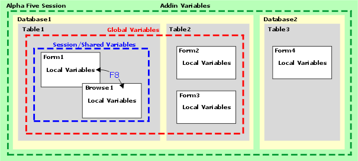

Variable Scope
A variable does not exist until it is declared. When the script, form, or session, in which it is declared, goes away, the variable leaves with it (unless the variable was defined with a Global or Addin scope). The duration of a variable definition, and the extent to which it is accessible from other places, is called the variable's scope. The scope of a variable can be local, layout, session, or global. A special kind of scope called Addin is also available. Addin variables are primarily used by Alpha Five itself.
|
Scoping Level |
dim keyword |
Variable exists while ? |
|
Global |
GLOBAL (e.g. dim GLOBAL NAME as C ) |
Alpha Five is running, until you close the current database. |
|
Session |
SHARED (e.g. dim SHARED NAME as C ) |
A window is open. Even if you change the layout that is loaded in the window (by using the File > Open? command from within the Form or Browse window), the variable continues to exist. |
|
Layout |
Cannot be declared using Xbasic |
The layout is open. If a different layout is loaded in the window (by using the File > Open? command from within the Form or Browse window), the variable will disappear. |
|
Local |
(none) (e.g. dim NAME as C ) |
A script is executing. |
|
Addin |
Cannot be declared using Xbasic. Instead, must execute these Xbasic commands: dim AA as P Aa = addin.variables() aa.varname = value |
Alpha Five is running, even after you close a database and switch to another database. In effect, an Addin variable is like a "super-global" variable. Unlike a global variable, you must reference an Addin variable by including an explicit pointer to the Addin variable frame. E.g. aa.varname (were aa is a pointer to the Addin variable frame) |
 Note : Layout variables
cannot be declared in Xbasic. They are defined in the layout editor.
Note : Layout variables
cannot be declared in Xbasic. They are defined in the layout editor.
 Note : Character variables
behave a little differently than other variables. as a time
saving aide for you, if you assign a numeric, date, or logical variable
to a character variable, Alpha Five will automatically convert the value
to a character type.
Note : Character variables
behave a little differently than other variables. as a time
saving aide for you, if you assign a numeric, date, or logical variable
to a character variable, Alpha Five will automatically convert the value
to a character type.
A Session variable is visible to a form and all sub-forms and sub-browses in that form. A Layout variable is only visible on the form for which it is defined. For example, a layout variable defined on a form that is used as a sub-form is not visible to the parent form. A Session variable used on the sub-form is visible to the parent form.
A form can refer to another form's Layout or Shared variables by first getting a pointer to the variables. See Getting a Pointer to Variables in a Different name-space for details.
A variable that is implicitly declared in a script is valid only while the script is running. When the script is done, the variable disappears and is not available to other scripts or other parts of an application (unless the script that creates the variables is executed using the SCRIPT_PLAY_LOCAL() function). Variables of this sort are called local variables because they are restricted to the context in which they are defined. Variables implicitly declared within a user-defined function, or declared as function parameters, are also local variables. These variables are available to only the function, and are destroyed when the function is completed.
Declaring Session and Global Variables
To extend the existence of a variable beyond the bounds of a script or a user-defined function, you must explicitly declare it as a global or session variable.
A session variable is available to any script within the current session. A session is created when a layout window (e.g. a form, browse, report etc.) window is first opened, or when an Operation is defined or run.
A global variable is available throughout Alpha Five. Any layout or script can reference it.

To declare a session, or global variable in a script, use the dim SHARED or dim GLOBAL statement at the start of the script or at any point before the variable is actually used.
Global and session variables are also defined through a table or set definition, or in the layout editors. You can also define global variables using the View, Global Variables command in the Code Editor.
Addin variables are available between databases, within the same Alpha Five session. See ADDIN.VARIABLES() and Using Addin Variables to Create a Multi-Database Application.
A calculated field is a value that is calculated when a record is entered or changed. You may define a calculated field for a:
table
set
layout
Tables support two types of calculated fields:
Field based - which produce and store a value in an existing field
Virtual - which produce values which may be placed on a layout or used for computations
If you define a calculated field for a table or set, you can use it in any layout or operation defined for that table or set. If you define a calculated field for a layout, you can use it only on the layout for which it is defined. The following illustration shows you the scope of these fields.
You can create a Virtual Calculated Field
by clicking  when designing a table, set, or layout. You
can only create a Field Based Calculated Field
in Field Rules. In all cases you can place one of these calculated fields on
a layout.
when designing a table, set, or layout. You
can only create a Field Based Calculated Field
in Field Rules. In all cases you can place one of these calculated fields on
a layout.
 Note : Only field based
calculated fields are stored in a table.
Note : Only field based
calculated fields are stored in a table.
Calculated fields can be used on layouts to display the results of a calculation. For example, you might place a calculation at the bottom of a sales report to display total sales. Calculated fields are also used to conserve disk-space by eliminating the storage of easily-derived information. For example, if you have a table of products in which you have a Cost field and a Quantity field, you can create a calculated field for the table that multiplies Cost and Quantity with the expression Cost * Quantity. When you create a layout or operation for the table, you can use the calculated field just as you would any other field.
A pointer variable is a way of uniquely identifying any object or window in Alpha Five.
By assigning a pointer to the window that is created when the form or browse is opened, you can then execute other commands later in your script that do different things to this window, or to objects contained within this window.
For example, assume you select the Open a Form or Browse Layout action. In defining this action, you assign a pointer called varP_window1 to the window that will be opened by this command. Later in your script, you may want to do things like:
Set the value in a field in this window
Change the appearance of some text in this window
Hide an object in this window
Enter a new record in this window
Close this window
In all cases, you will need to be able to specify which of several possible different open windows you are referring to. By specifying the pointer variable varP_window1, you will be able to uniquely identify this window.
Examples
|
'Code in Button1 on a form dim vName as C vName = "Fred" 'Code in Button2 on a form ui_msg_box("Name is", vName) |
When you press Button2 (after pressing Button1), you get an error message because vName is a local variable. Even though its value was set in Button1, it is undefined as far as the script attached to Button2 is concerned.
|
'Code in Button1 on a form dim SHARED vName as C vName = "Fred" 'Code in Button2 on a form dim SHARED vName as C ui_msg_box("Name is", vName) |
In this case, when you press Button2 (after pressing Button1), the script works and the message box is displayed. This is because Button1 defined vName as a shared variable, available to all of the scripts in the session.
Declaring an addin variable in a two-step process.
|
dim a as P dim a.myvar as C a = addin.variables() a.myvar = "do not stop Alpha Five or you will lose this!" |
Warnings on Scope of Variables Conflicts
If an Xbasic script overrides the scope of a variable, Alpha Five issues a warning in the Trace window. For example, you may have defined a variable on a form and set its scope to Layout. Then, you may have defined an event script on the form that defined a variable of the same name, but at a different scope.
The following illustration courtesy of Marcel Kollenaar and Peter Greulich.
See Also
What is a Variable?, Variable Data Types, LOCAL_VARIABLES(), GLOBAL_VARIABLES(), SESSION_VARIABLES(), Drag-and-Drop List